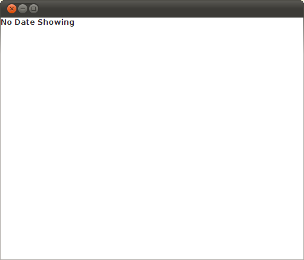
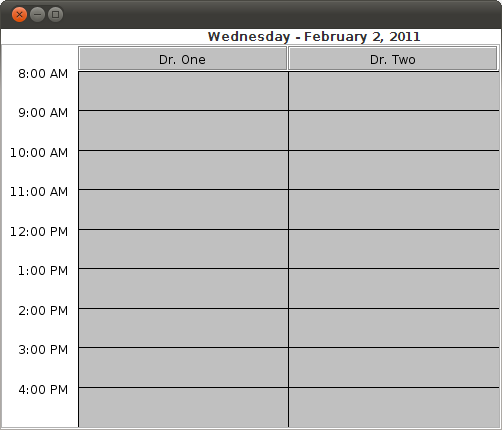
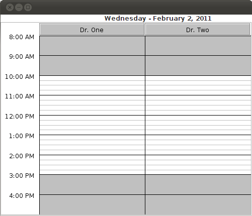
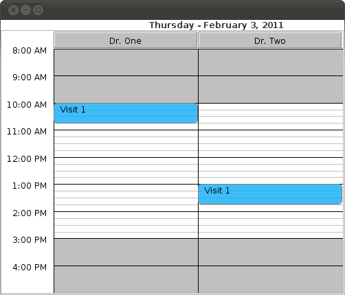

SetupThis tutorial assumes you use maven for your development. You don't necessarily need to, but it makes all of the dependency management a lot easier. Step 1 - Setting up your POM
First you need to configure your
<?xml version="1.0" encoding="UTF-8"?>
<project xmlns="http://maven.apache.org/POM/4.0.0"
xmlns:xsi="http://www.w3.org/2001/XMLSchema-instance"
xsi:schemaLocation="http://maven.apache.org/POM/4.0.0 http://maven.apache.org/xsd/maven-4.0.0.xsd">
<modelVersion>4.0.0</modelVersion>
<groupId>com.acme</groupId>
<artifactId>MyScheduler</artifactId>
<version>1.0-SNAPSHOT</version>
<dependencies>
<dependency>
<groupId>com.thirdnf.ResourceScheduler</groupId>
<artifactId>Component</artifactId>
<version>1.0-SNAPSHOT</version>
</dependency>
</dependencies>
</project>
Your file structure should then look something like: .: pom.xml src ./src/main/java/com/acme: MyScheduler.javaThe MyScheduler.java file is currently blank.
Step 2 - Adding the componentThe first thing we need to do is create a window and add the Scheduler component: Step 3 - Compile itUsing maven this can be compile by running the following at the top level directory:
mvn compile
and then use your IDE to try running it. Alternatively you can
use maven to assemble a jar which contains all of your
dependencies and try running that. If all works you should get
something that looks like:

Step 4 - Attaching a Model
Clearly this is not terribly useful so the next thing to do is
to attach a model which the scheduler will query to find out
the resources and appointments which are available. The
easiest way to do this is to create a model which extends
package com.acme;
import com.thirdnf.ResourceScheduler.*;
import org.joda.time.LocalDate;
import org.joda.time.LocalTime;
import java.util.ArrayList;
import java.util.Iterator;
public class MySchedulerModel extends AbstractSchedulerModel
{
private Resource Resource1 = new MyResource("Dr. One");
private Resource Resource2 = new MyResource("Dr. Two");
public void visitAppointments(AppointmentVisitor appointmentVisitor, LocalDate localDate)
{
}
public void visitResources(ResourceVisitor resourceVisitor, LocalDate localDate)
{
resourceVisitor.visitResource(Resource1);
resourceVisitor.visitResource(Resource2);
}
public LocalTime getStartTime(LocalDate localDate)
{
return new LocalTime(8,0,0);
}
public LocalTime getEndTime(LocalDate localDate)
{
return new LocalTime(17,0,0);
}
}
class MyResource implements Resource
{
private final String _title;
public MyResource(String title)
{
_title = title;
}
public Iterator<Availability> getAvailability(LocalDate localDate)
{
return (new ArrayList<Availability>()).iterator();
}
public String getTitle()
{
return _title;
}
}
To use this model in the scheduler you just need call the setModel method on the scheduler and tell the scheduler which date you want it to show. Scheduler scheduler = new Scheduler(); scheduler.setModel(new MySchedulerModel()); scheduler.showDate(new LocalDate()); add(scheduler); The showDate call is necessary as it triggers the Scheduler component to ask the model for the resources and appointments for that date. The empty construction for LocalDate will create a local date for your current date. Therefore your screen will have a later date on it than mine does. You would then want to compile and run it as you did in step 4. Doing this should now give you a screen which looks like. Step 5 - Adding availability
You may notice that the background is all grey, this is
because the resources do not currently have any availability.
The availability is determined by each resource and is called
from the Scheduler through the
public Iterator<Availability> getAvailability(LocalDate localDate)
{
return (new ArrayList<Availability>()).iterator();
}
In this case our iterator is empty so the Scheduler is showing that they have no availability. To change this for a work day of 10am - 3pm you can update it to show
public Iterator<Availability> getAvailability(LocalDate localDate)
{
List<Availability> availabilities = new ArrayList<Availability>();
availabilities.add(new Availability(new LocalTime(10,0,0), Duration.standardHours(5)));
return availabilities.iterator();
}
Notice that the availability is set as a start time and a duration. Our application now looks like: Step 6 - Adding Appointments
Lastly we want to add some appointments to our scheduler. This is
going to work almost exactly the same way the Resources worked where
we are gong to have our
class MyAppointment implements Appointment
{
private String _title;
private Resource _resource;
private DateTime _dateTime;
public MyAppointment(String title, Resource resource, LocalTime time)
{
_title = title;
_resource = resource;
_dateTime = time.toDateTimeToday();
}
public DateTime getDateTime()
{
return _dateTime;
}
public String getTitle()
{
return _title;
}
public Resource getResource()
{
return _resource;
}
public Duration getDuration()
{
return Duration.standardMinutes(45);
}
}
Now we can create two instances of our appointment just under our resource construction:
private Appointment Appointment1 =
new MyAppointment("Visit 1", Resource1, new LocalTime(10, 0, 0));
private Appointment Appointment2 =
new MyAppointment("Visit 1", Resource2, new LocalTime(13, 0, 0));
And finally we update the
public void visitAppointments(AppointmentVisitor appointmentVisitor, LocalDate localDate)
{
appointmentVisitor.visitAppointment(Appointment1);
appointmentVisitor.visitAppointment(Appointment2);
}
After a compile and run our application looks like Step 7 - What's NextThis tutorial was intended to get you started using the scheduler but is not intended to show all of its capabilities. Right now the appointments don't respond to mouse clicks and they are all the same light blue color. It is entirely possible to change how they respond to mouse clicks and what their shape and color look like by supplying your own component factory. This is not as difficult as it might sound. An example of this can be seen in the Example Application which is available in the same distribution as this source code. As people use this component and give me feed back I'll likely be updating this tutorial to add more advanced sections, but I hope this helps to get you going. |